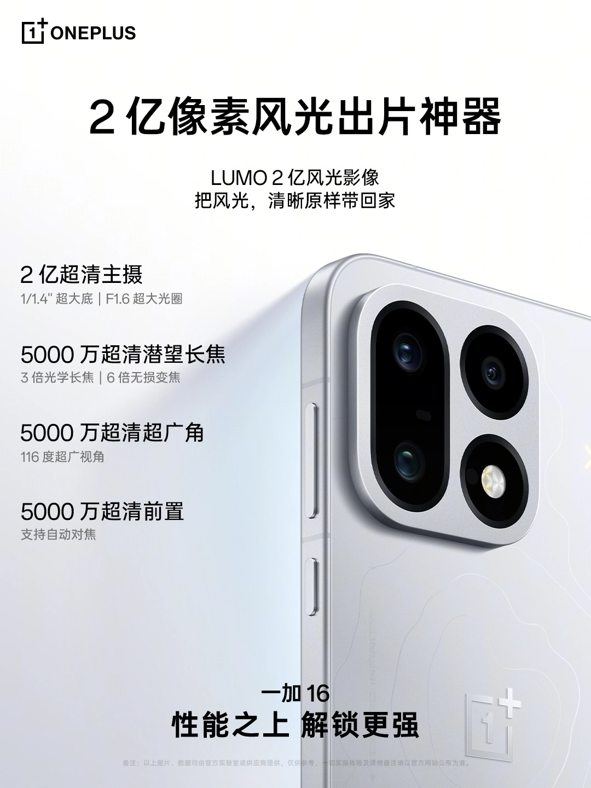
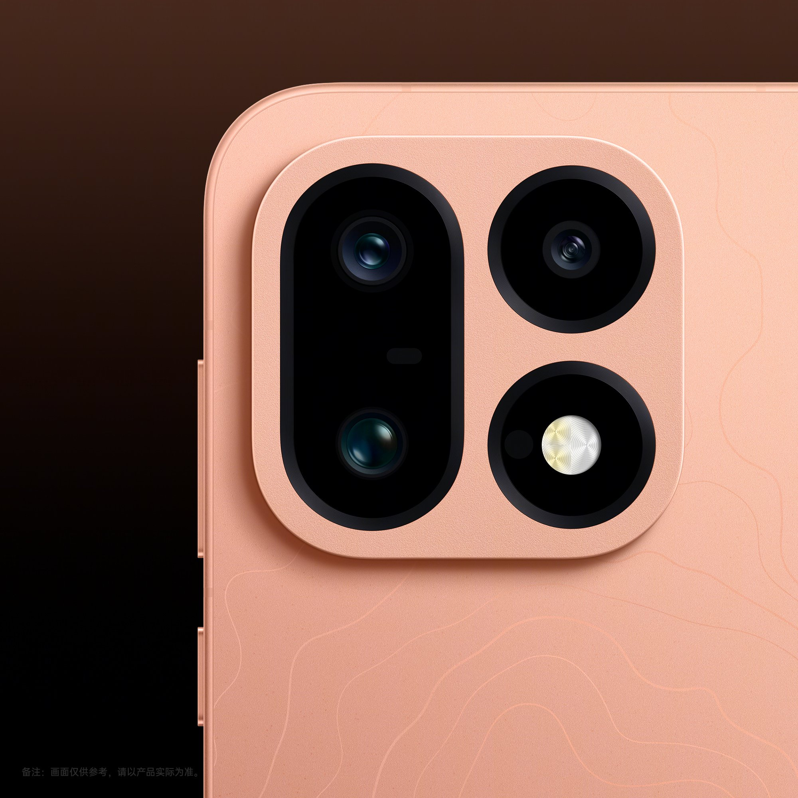
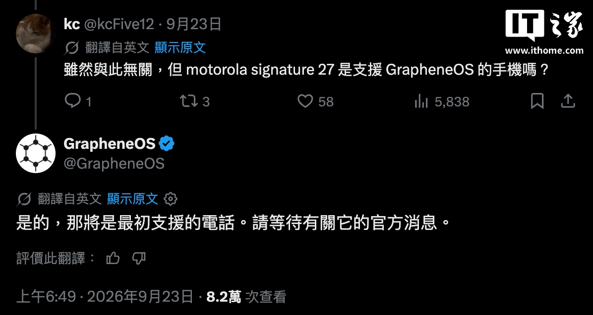
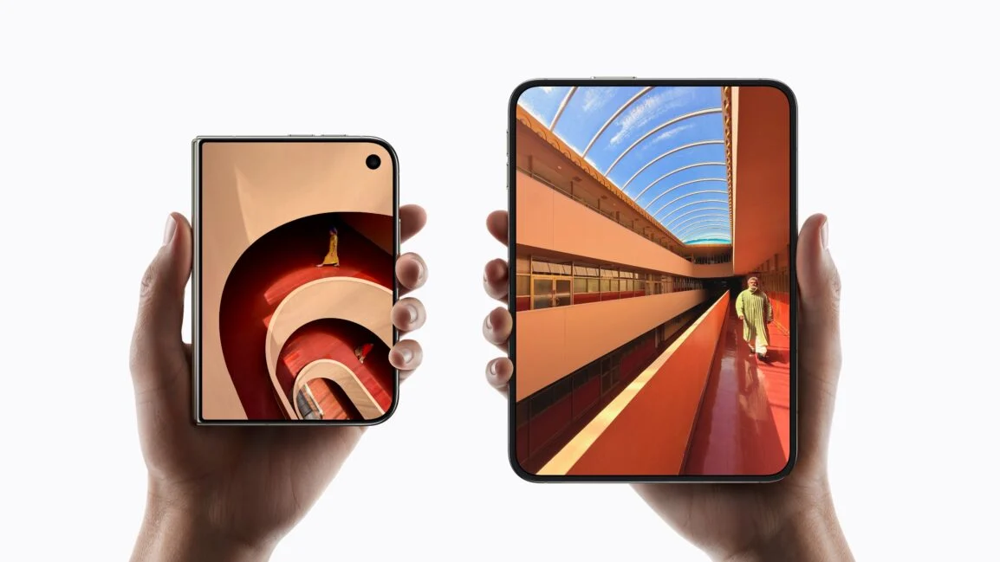
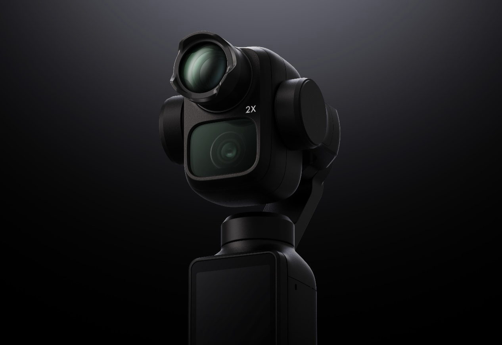
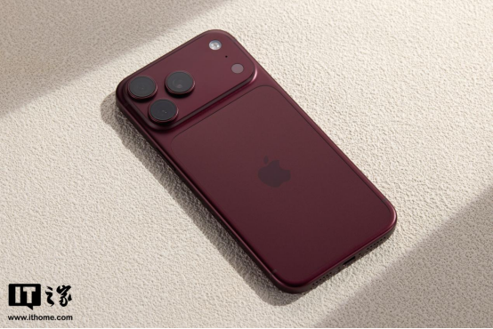
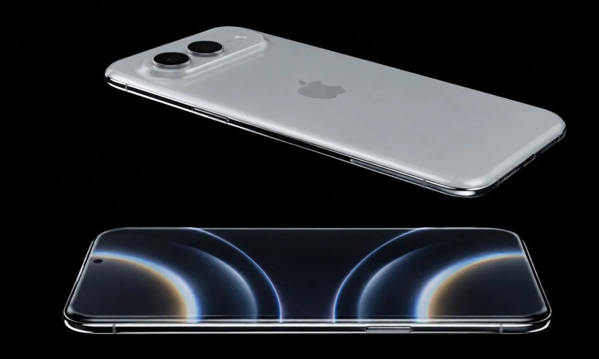
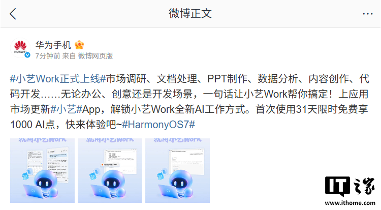
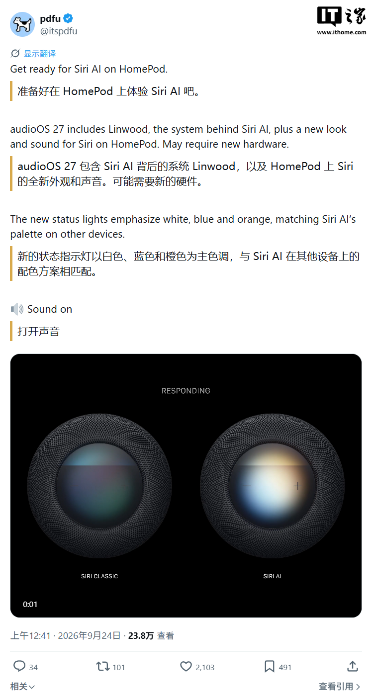

THE TECH EDIT
기술의 변화, 매일 한눈에.
카메라 · 스마트폰 · AI, 해외 테크 소식을 모아 전합니다.
최근 발행2026-09-25
새로 들어온 소식
LATEST STORIES

최신 뉴스
전체 3,276개 기사
Apple 전 CEO 팀 쿡, 미국 반도체 업계 최고 영예 수상… AMD 리사 수, 그의 업적 극찬

해외 금융 대기업 Revolut, 영국 최초 오프라인 안면 인식 결제 서비스 출시: 카메라 보고 웃으면 결제 완료

Qualcomm, 초저해상도 감지 카메라 공개: 얼굴은 감지하지만 신원 식별은 불가

2026 스냅드래곤 서밋 퀄컴 고위 관계자 인터뷰: 듀얼 플래그십 전략, 업계 최초 5GHz 초과, Xiaomi와의 협력 관계, AI 스마트폰의 미래...

PBKreviews, Samsung Galaxy S26 FE 스마트폰 분해: 렌즈 커버와 배터리 유지보수 용이성 향상

OnePlus 16 스마트폰, 2억 화소 대형 센서 메인 카메라 최초 탑재 공식 발표, Sony IMX882 페리스코프 망원 렌즈로 업그레이드

OnePlus 16 카메라 사양 확인: 200MP 메인 센서 및 새로운 프로 이미징 모드

Nikon Z5ⅡC 풀프레임 미러리스 카메라 출시: 전자식 뷰파인더 미탑재, 본체 9,999위안

구글 픽셀 독점 깨다, 모토로라 Signature 27 스마트폰 GrapheneOS 시스템 지원 공식 발표

Meta, 카메라 없는 레이밴 오디오 스마트 안경 349달러에 출시: 43g 무게 + 12시간 배터리, 블랙핑크 리사 협업 안경 등 신제품 공개

구글 안드로이드 사장 사마트, Apple iPhone Duo 출시 언급: 폴더블 디스플레이 스마트폰 방향이 옳다는 증거

DJI Pocket 4P 망원 렌즈 솔루션 유출, 광각 렌즈 시야각에 영향 없을 것으로 예상

베이스, iPhone 18 Pro 액세서리 3종 세트 출시: 새 스마트폰 보호 및 안전 충전 한 번에 해결

Apple iPhone 4 '안테나 게이트' 기자회견 전체 Q&A 영상 유출, 스티브 잡스와 팀 쿡 현장에서 기자 질문에 답변

Apple 20주년 기념 iPhone, 베젤 없는 쿼드 커브드 스크린 디자인 채택, CoE 및 LTPO+ 기술 배포 일시 중단 예정

Apple iPhone 20 Pro, 무한 쿼드 커브드 디스플레이 출시, 두 가지 핵심 기술은 제외

Apple, 다음 주 iOS 27 업데이트 배포 확인, iPhone 18 Pro/Max 자동 재부팅 문제 해결

Xiaomi 최초의 풀 컬러 야간 투시 실내 카메라 크라우드 펀딩 시작: 4K 초고화질, AI 감지, 429위안

Huawei, 샤오이 워크(Xiaoyi Work) 출시 공식 발표: 첫 31일간 1,000 AI 포인트 무료 제공

Apple HomePod, Siri AI 인터랙션 경험 유출: 화이트/블루/오렌지 메인 색상 표시등

Xiaomi 18 Pro 시리즈 투명 스페셜 에디션 스마트폰 출시, 9999위안부터
검색 결과가 없습니다
다른 검색어를 입력하거나 필터를 초기화해 보세요.